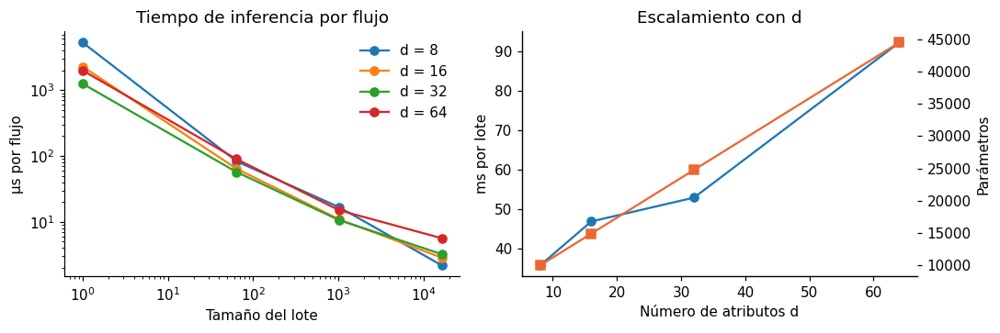
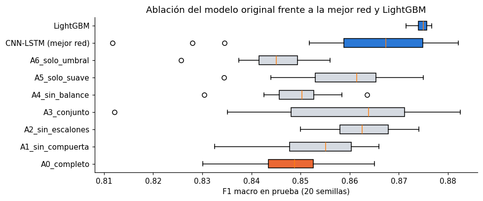
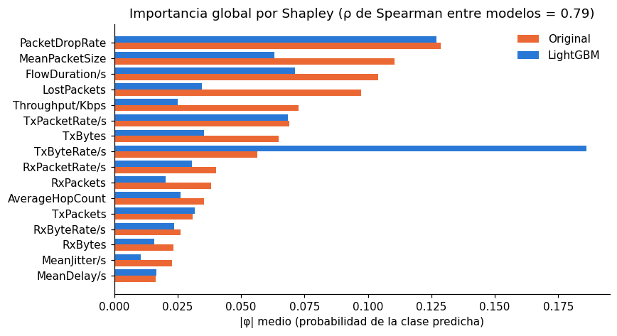

Modelo original: implementación, pruebas, ablación e interpretabilidad#
Implementación propia (R2)#
El mecanismo está programado desde su formulación en src/original_model.py, sin import de un modelo de librería ni código de terceros. PyTorch se usa solo como motor tensorial: capas nn.Linear, sigmoid, softmax, logsumexp y diferenciación automática.
Pieza |
Archivo |
Qué hace |
|---|---|---|
|
|
Codificador \(s_{j,t} = \sigma((x_j - \theta_{j,t})/\tau_j)\) con umbrales y temperaturas aprendibles, \(\tau_j \ge \tau_{\min}\), e inicialización por cuantiles |
|
|
Expertos, compuerta y mezcla de probabilidades; devuelve \(\log p(y \mid x)\); |
Bucle de entrenamiento |
|
Copia fiel de |
Registro en el catálogo |
|
Agrega el modelo al catálogo del E2 sin modificar su código: mismos datos, transformación, optimizador, planificador, parada temprana, conteo de MAC y registro de corridas |
El modelo usa los ganchos que el motor del E2 ya ofrecía: preentrenar(X, generador), con el que la red de creencia profunda inicializaba sus RBM y que aquí inicializa los umbrales en cuantiles, y la salida en log-probabilidades, que hace que la entropía cruzada estándar sea la log-verosimilitud de la mezcla.
Pruebas unitarias#
tests/test_original_model.py cubre los seis puntos de la sección 6.5 del enunciado y corre en integración continua (.github/workflows/entregable3-pruebas.yml) junto con las pruebas del dashboard.
Punto |
Prueba |
Qué verifica |
|---|---|---|
(i) |
|
Pérdida menor que 0,1 en 300 pasos sobre 64 ejemplos sintéticos con 4 clases definidas por umbrales en dos ejes |
(ii) |
|
Mismas probabilidades con la misma semilla |
(iii) |
|
Salida (n, 5), probabilidades que suman 1, error claro con 7 atributos en lugar de 16 y con opciones desconocidas |
(iv) |
|
Gradiente finito y no nulo en todos los parámetros, incluidos umbrales y temperaturas |
(v) |
|
El cociente empírico nunca supera \(K\); la cota del codificador; la desigualdad de Jensen flujo por flujo |
(vi) |
|
Mismas salidas tras guardar y cargar, y error menor que \(10^{-4}\) tras exportar a ONNX |
Complejidad#
Para un flujo con \(d\) atributos, \(T\) umbrales y anchos \(h_u\), \(h_{s1}\), \(h_{s2}\) y \(h_g\), una pasada hacia adelante cuesta \(O(dT + dT\,h_u + d\,h_{s1} + h_{s1}h_{s2} + d\,h_g)\) operaciones, es decir, \(O(d\,(T h_u + h_{s1} + h_g))\): es lineal en el número de atributos y no tiene término cuadrático, a diferencia de la atención del Transformer. El entrenamiento cuesta \(O(N\,E)\) veces eso, con \(N\) flujos y \(E\) épocas. Con los valores congelados (\(d = 16\), \(T = 8\), \(h_u = 64\), \(h_s = (64, 64)\) y \(h_g = 32\)) son 14 908 parámetros y 14 528 multiplicaciones-acumulaciones por flujo.

| lote | 1 | 64 | 1024 | 16384 |
|---|---|---|---|---|
| d | ||||
| 8 | 5295.26 | 83.0625 | 16.6851 | 2.1809 |
| 16 | 2280.27 | 64.0056 | 10.8918 | 2.8627 |
| 32 | 1252.67 | 57.0631 | 10.6213 | 3.2320 |
| 64 | 1988.02 | 89.6934 | 15.0124 | 5.6372 |
El tiempo por flujo cae con el tamaño del lote hasta estabilizarse en pocos microsegundos, y tanto los parámetros como el tiempo con lotes grandes crecen de forma aproximadamente lineal con el número de atributos \(d\), como predice el análisis asintótico.
Esto quiere decir que el costo del modelo lo dominan las capas lineales del experto de umbrales, cuya entrada tiene \(dT\) dimensiones, y que el modelo puede servir en tiempo real en un nodo con CPU modesta.
En consecuencia, no hace falta cuantizarlo para el dashboard (64 KB en ONNX) y, si se aplicara a conjuntos con más atributos, conviene reducir \(T\) antes que los anchos.
Ablación#
Cada variante cambia un solo componente frente al modelo completo y usa las mismas 20 semillas (6001 a 6020), los mismos hiperparámetros y el mismo protocolo. La familia de la ablación tiene su propio Holm (protocolo, sección 9).
| descripción | F1 variante | F1 completo | completo − variante | p t Holm | p Wilcoxon Holm | δ Cliff | conf B–W variante | conf B–W completo | el componente aporta | el componente resta | |
|---|---|---|---|---|---|---|---|---|---|---|---|
| 0 | Sin compuerta (promedio 1/2) | 0.8539 | 0.8479 | -0.0059 | 5.6832e-02 | 0.0612 | -0.360 | 0.1437 | 0.1525 | False | False |
| 1 | Sin escalones suaves (MLP sobre x) | 0.8624 | 0.8479 | -0.0145 | 7.0086e-05 | 0.0002 | -0.810 | 0.1430 | 0.1525 | False | True |
| 2 | Entrenamiento conjunto clásico | 0.8584 | 0.8479 | -0.0105 | 1.0462e-01 | 0.0887 | -0.420 | 0.1355 | 0.1525 | False | False |
| 3 | Sin regularizador de balance (γ = 0) | 0.8495 | 0.8479 | -0.0016 | 5.8248e-01 | 0.2455 | -0.115 | 0.1511 | 0.1525 | False | False |
| 4 | Solo el experto suave (modelo base) | 0.8590 | 0.8479 | -0.0110 | 3.4492e-03 | 0.0051 | -0.640 | 0.1462 | 0.1525 | False | True |
| 5 | Solo el experto de umbrales | 0.8450 | 0.8479 | 0.0029 | 5.8248e-01 | 0.1946 | 0.250 | 0.1509 | 0.1525 | False | False |

Quitar el codificador de escalones suaves (A2) mejora el F1 macro de 0,848 a 0,862, una diferencia significativa después de Holm (p de 0,0001 en la t y 0,0002 en Wilcoxon; δ de Cliff = −0,81). Usar solo el experto suave (A5) también es mejor (0,859). Quitar la compuerta (A1), el entrenamiento cooperativo (A3) o el regularizador de balance (A4) no cambia el F1 de forma significativa. Y usar solo el experto de umbrales (A6) da 0,845, sin diferencia con el modelo completo.
Esto significa que, en la prueba sellada, el componente central del mecanismo resta en lugar de sumar: los umbrales aprendidos en los escenarios de entrenamiento no transfieren a los segmentos de prueba, y la compuerta no compensa esa pérdida. Es lo contrario de lo observado en la partición de desarrollo, donde el experto de umbrales solo era el mejor diseño (0,843 frente a 0,824 del suave). La diferencia entre desarrollo y confirmación es otra manifestación de la dependencia por escenario: la partición de desarrollo comparte escenarios entre ajuste y evaluación, igual que la prueba, pero en otra proporción.
Por tal motivo, la ablación se reporta como evidencia en contra de la hipótesis del mecanismo y no se itera el diseño con estos resultados, porque usar la prueba para rediseñar invalidaría la confirmación (sección 7.2 del enunciado).
Predicciones secundarias#
| Predicción | ¿Se cumple? | Evidencia | |
|---|---|---|---|
| 0 | P1: sin escalones sube la confusión B–W | False | conf. B–W completo 0.152; sin escalones 0.143 |
| 1 | P2: la compuerta pesa más el experto de umbral... | True | peso medio hacia el experto de umbrales: Black... |
| 2 | P3: la ventaja frente a CNN-LSTM se concentra ... | False | original − CNN-LSTM por clase: Blackhole -0.02... |
P2 se cumple: la compuerta envía al experto de umbrales el 88 % del peso en los flujos Wormhole y el 69 % en los Blackhole, frente al 51 % en Sybil y el 34 % en Normal. P1 y P3 no se cumplen: sin el codificador la confusión Blackhole–Wormhole baja de 0,153 a 0,143, y frente a CNN-LSTM el original pierde 0,029 de F1 en Blackhole y 0,031 en Wormhole.
En ese sentido, el mecanismo hace lo que se diseñó, porque la compuerta aprende a mandar los ataques de enrutamiento al experto de umbrales, pero la premisa causal falla: en la prueba, ese experto separa peor Blackhole de Wormhole que una red suave. El fallo de la hipótesis no es de implementación, sino de transferencia del sesgo.
Con base en esto, se concluye que el sesgo de árbol que hace fuerte a LightGBM no se obtiene con escalones aprendidos por gradiente, y la explicación de esa diferencia queda como trabajo futuro (capítulo 10).
Interpretabilidad#
Se calcularon valores de Shapley de la probabilidad de la clase predicha por muestreo de permutaciones [Lundberg and Lee, 2017], con implementación propia (experiments/analisis_robustez.py), para 300 flujos de prueba (60 por clase) frente a un fondo de 50 flujos de entrenamiento, en el modelo original y en LightGBM, el mejor benchmark.

Estabilidad entre semillas del original (ρ de Spearman de la importancia): [0.918, 0.821, 0.935]
| modelo | k atributos borrados | caída de prob. (más importantes) | caída de prob. (al azar) | |
|---|---|---|---|---|
| 0 | Original | 1 | 0.4013 | 0.0568 |
| 1 | Original | 3 | 0.6022 | 0.1555 |
| 2 | Original | 5 | 0.7023 | 0.2415 |
| 3 | LightGBM | 1 | 0.4213 | 0.0560 |
| 4 | LightGBM | 3 | 0.6469 | 0.1369 |
| 5 | LightGBM | 5 | 0.7236 | 0.2935 |
Los dos modelos se apoyan en atributos parecidos (ρ de Spearman de 0,79 entre sus importancias globales), y la importancia del original es estable entre semillas (ρ medio de 0,89). La prueba de borrado confirma la fidelidad: reemplazar por la mediana del fondo los atributos más importantes de cada flujo baja la probabilidad de la clase predicha mucho más que borrar el mismo número de atributos al azar.
Lo anterior indica que las explicaciones no son ruido de una semilla y que el original no depende de un atajo distinto al de LightGBM: usa la información de tasas, pérdida y rendimiento que el dominio asocia con cada ataque.
Por ello, las explicaciones locales del dashboard (oclusión por atributo) se presentan como una ayuda para el analista y se acompañan del aviso fuera de dominio, porque la estabilidad de la importancia no garantiza que la predicción sea correcta.